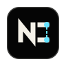

Signal
Multiplayer bugs aren't the problem. Finding them is.
One report becomes five script searches, three unchecked remotes, and a long night in Output. NetScope pulls the network path into view before the trail goes cold.

NetScope Get NetScopeThe Chrome DevTools for Roblox networking
Inspect RemoteEvents, trace call flow, and review risky multiplayer behavior from a single Studio-native surface built for production Roblox teams.
Payload: weaponId, slot, timestamp
Latency: 42ms
Signal
One report becomes five script searches, three unchecked remotes, and a long night in Output. NetScope pulls the network path into view before the trail goes cold.
Network map
Remotes, scripts, services, listeners, and warnings become a living graph your team can inspect.
Remote tracing
Watch a packet travel from UI button, to RemoteEvent, to server service, to persisted state.
Replay
Scrub through a simulated request history and see exactly when a risky payload appeared.
Security
Surface missing validation, remote spam, and client-authoritative changes while the code is still fresh.
Answers
Query the graph for ownership, risk, and currency paths without manually opening every script.
EconomyService and AwardDailyBonus are the primary mutation paths.
Team reviews
Use the same graph for architecture reviews, security findings, and team handoffs.
Pricing
Save hours of debugging with one simple tool.
For Roblox developers and teams that want the full networking toolkit now.
Get NetScope from the Roblox Creator Store and add it to your Studio account.
Launch Roblox Studio, open the Plugins tab, and start NetScope from the toolbar.
Use your dashboard license key to unlock the workflows included with your plan.